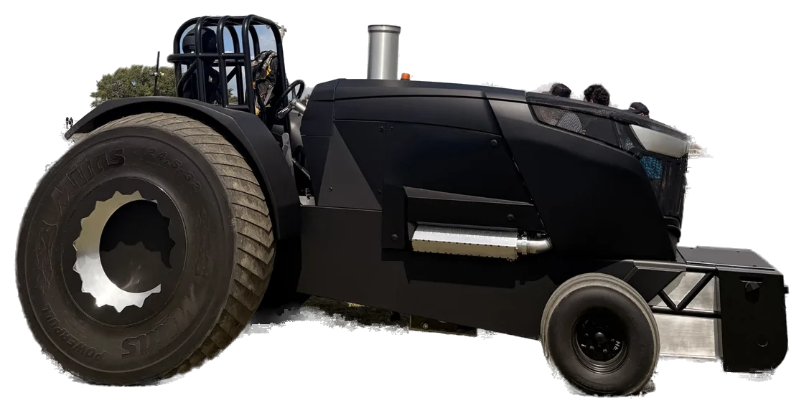

Pro Stock · Waterloo, WI
The Machine
A Caterpillar 3208 V8, reverse flow: a setup you won't find on any other tractor on the track. Nothing about it is off the shelf, and nothing about it was quick.
- Engine
- Cat 3208 V8
- Built to
- 680 CI
- Weight
- 10,000 LB
- Horsepower
- Unknown

01The Cat 3208, in the shop 
02Profile, matte black 
03From the rear, on the track 
04Head on, white smoke
Anatomy
Tap a number. On a keyboard, use the arrow keys.

01 · Engine
Cat 3208 V8
Spec sheet
Everything on it is custom-built.
- 01Engine
- V8Cat 3208, reverse flow
- 02Displacement
- 680CI636 stock
- 03Turbo
- 1TurboSingle, large
- 04Weight
- 10,000LBMatte black, weight box included
- 05Tires
- 24.5-32Rear
- 06Horsepower
- UnknownWe'll let the track answer.
- Chassis
- Custom-built
- Body
- Challenger 1015
- Class
- Pro Stock
- Home
- Waterloo, WI
- Leagues
- NTPA & PPL Badger State
- Nickname
- The Evil One
Hear it
 Play: Monroe, WI ↗Green County Fall Nationals, 2026 · opens YouTube in a new tab
Play: Monroe, WI ↗Green County Fall Nationals, 2026 · opens YouTube in a new tab
Aquí va el video de la dueña (arranque del motor). Mientras, abre el video real de Monroe.
Cat V8 vs the field
Most Pro Stock tractors run an inline six. Heavy Metal runs a Caterpillar V8, built out from 636 to 680 cubic inches. No numbers for the field here: only what holds for any inline six.
Confirmar con Chris la frase "most Pro Stock tractors run an inline six" antes de publicar.
Questions from the fence line
How much horsepower does it make?
Unknown. We'll let the track answer.
What is Pro Stock?
A tractor pulling class for modified diesel farm tractors. Each tractor drags a weight transfer sled down a dirt track; going the full length is a full pull.
What engine does Heavy Metal run?
A Caterpillar 3208 V8 in reverse flow configuration, built out from 636 cubic inches stock to 680, with a single large turbo. A setup you won't find on any other tractor on the track.
Who built it?
Chris F. and his family, in their shop in Waterloo, Wisconsin. The idea was born in 2014, the first bolt went in in February 2020, and nearly everything on it is custom-built.
Where can I see it pull?
This season Heavy Metal is chasing its first full pull at about 20 competitions on the NTPA and PPL Badger State circuits. Dates are still being confirmed; check the Schedule.
The one to wear
The spec sheet, on a tee
Cat V8 Spec Tee: the numbers on this page, printed to order. Horsepower still unknown.
- Cat 3208 V8
- 680 CI
- 10,000 LB
- 24.5-32
- HP: Unknown